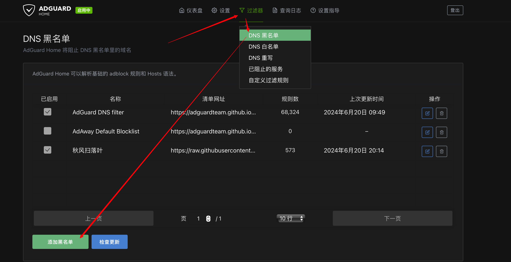
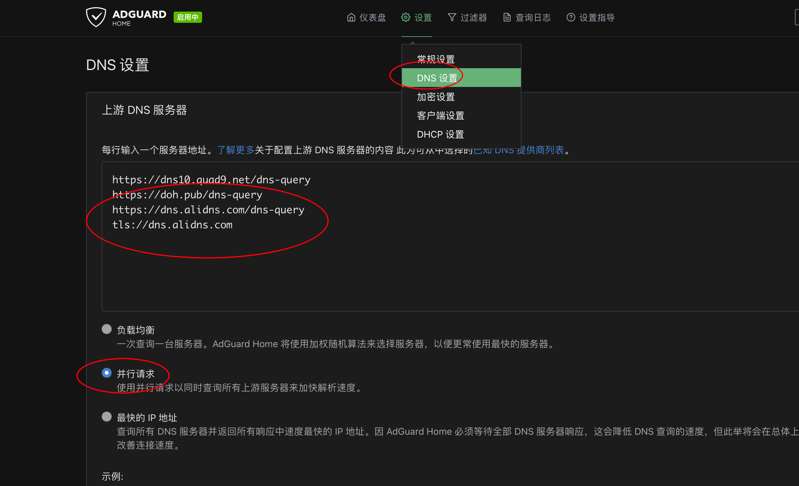
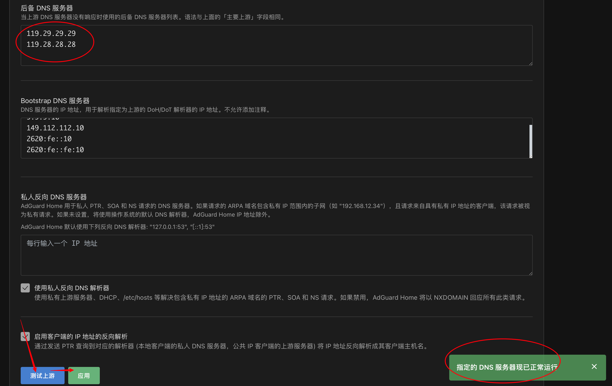

极空间配置iStoreOS旁路由
修改于: 2024-06-18- 环境
- 极空间Z4Pro性能版
- 参考资料
模式图介绍
固件下载
地址: https://fw.koolcenter.com/iStoreOS/
注意选择适合自己CPU架构的, 我的是 intel 的, 选择 https://fw.koolcenter.com/iStoreOS/x86_64/ 下最新的一个
虚拟机安装
注解
如果是首次使用虚拟机功能, 需要先配置下桥接网络. 已经有的就跳过这一步

我机子是双网口, 配置的是分别使用网桥
镜像下载好后是gz格式, 需要解压
# xxx.img.gz 改成下载的格式
gzip -d xxx.img.gz
虚拟机中新建并选择img文件
选择img文件, 端口随便写, 其他默认即可(有需要也可以稍微更改下)
配置网络, 选择当前在用的物理网口, 不知道是哪个就去系统设置里看看
等待进入系统后, 输入
ip addr
查看本机地址
配置旁路由
上一步知道了 本机ip地址, 随便找台电脑访问这个地址. 以我这里的 192.168.50.2 为例
地址:
http://192.168.50.2/
会进入页面
默认账密为:
root password
然后进入这里
选择 自动配置然后确定即可
注解
注意作为旁路由时，需要将配置中的DHCP服务关闭(这个是后面补充的, 所以拿的别人的图)
成功后点击首页就可以看到信息了
配置PassWall
由于政策原因, 商店没有这个插件, 访问这个页面下载: https://github.com/AUK9527/Are-u-ok/tree/main/x86 , 注意选择自己机器对应的版本. 我选的第一个
然后在 iStoreOS 内上传
新版上传后会自动安装, 然后就可以在 服务 中看到
PassWall服务配置
Clash配置
下载地址: https://github.com/vernesong/OpenClash/releases
注解
历史资源
#iptables
opkg update
opkg install coreutils-nohup bash iptables dnsmasq-full curl ca-certificates ipset ip-full iptables-mod-tproxy iptables-mod-extra libcap libcap-bin ruby ruby-yaml kmod-tun kmod-inet-diag unzip luci-compat luci luci-base
#nftables
opkg update
opkg install coreutils-nohup bash dnsmasq-full curl ca-certificates ipset ip-full libcap libcap-bin ruby ruby-yaml kmod-tun kmod-inet-diag unzip kmod-nft-tproxy luci-compat luci luci-base
还是拖动到手动安装
注意使用极空间安装时因为某些配置, 路由等信息会有变化, 倒是Web页面上的连接中断, 这个时候不要急, 去重启一下即可(或者直接在虚拟机上的界面安装).
等待重启完成后, 就可以在服务项中看到 clash 了

上传自己的配置信息即可(找自己的机场)
- 其他配置
插件设置-版本更新（安装内核）
插件设置-GEO数据库订阅、大路白名单订阅（都更新一下）
插件设置-模式设置
运行模式：Fake-IP(TUN-混合)模式【UDP-TUN,TCP-转发】
插件设置-流量控制（勾选）
路由本机代理
禁用QU1C
实验性：绕过中国大路IP
大路域名DNS服务器223.5.5.5
仅允许内网
插件设置-dns设置
- 本地DNS劫特：停用
- 禁止Dnsmasq缓存DNS：勾选
覆写设置-dns设置
- 自定义上游DNS服务器：勾选
- NameServer增加一组：127.0.0.1 5335 udp，并只保留这一组被勾选
- FallBack按需勾选
自定义规则
进入 OpenClash->覆写设置->规则设置 , 比如这里配置百度跟QQ不走代理:
rules:
- DOMAIN-SUFFIX,baidu.com,DIRECT
- DOMAIN-SUFFIX,qq.com,DIRECT
然后滑动到最下面应用
支持的规则:
##- SCRIPT,quic,REJECT #shortcuts rule ##- SCRIPT,time-limit,REJECT #shortcuts rule ##- PROCESS-NAME,curl,DIRECT #匹配路由自身进程(curl直连) ##- DOMAIN-SUFFIX,google.com,Proxy #匹配域名后缀(交由Proxy代理服务器组) ##- DOMAIN-KEYWORD,google,Proxy #匹配域名关键字(交由Proxy代理服务器组) ##- DOMAIN,google.com,Proxy #匹配域名(交由Proxy代理服务器组) ##- DOMAIN-SUFFIX,ad.com,REJECT #匹配域名后缀(拒绝) ##- IP-CIDR,127.0.0.0/8,DIRECT #匹配数据目标IP(直连) ##- SRC-IP-CIDR,192.168.1.201/32,DIRECT #匹配数据发起IP(直连) ##- DST-PORT,80,DIRECT #匹配数据目标端口(直连) ##- SRC-PORT,7777,DIRECT #匹配数据源端口(直连) 但主要用到的是域名或者关键字 ##- DOMAIN-SUFFIX,google.com,Proxy #匹配域名后缀(交由Proxy代理服务器组) ##- DOMAIN-KEYWORD,google,Proxy #匹配域名关键字(交由Proxy代理服务器组) Proxy代表要代理 DIRECT代表不走代理 REJECT代表拒绝 根据自己的需求来配置规则
然后就可以去 运行状态-YACD控制面板-规则，查看上面设置的规则
内核配置
正常情况下, 启动clash后会自动提示安装内核, 但是有可能网不好导致下载失败.
这个时候可以参考下面的方法配置内核
来源: [openwrt(x86)] OPENCLASH 内核更新失败解决方法
通过网络下载安装，使用此方法，在Dev内核发布页内查找对应的架构安装包， 替换掉以下命令内的 clash-linux-armv8.tar.gz 内容， 如：将 clash-linux-armv8.tar.gz 替换为 clash-linux-mips64.tar.gz，依次运行以下命令即可，命令如下
# 进入内核安装目录 cd /etc/openclash/core/ # 下载内核安装包 wget https://github.com/vernesong/OpenClash/releases/download/Clash/clash-linux-armv8.tar.gz # 解压内核安装包 tar -zxvf clash-linux-armv8.tar.gz # 给予最高权限 chmod 777 clash2、无法通过 wget 下载或手动上传，可使用此方法，同样在Dev内核发布页内查找下载对应的架构安装包， 将安装包通过 SFTP 上传到 /etc/openclash/core/ 目录下，依次执行以下命令即可，命令如下：
# 进入内核安装目录 cd /etc/openclash/core/ # 解压内核安装包 tar -zxvf clash-linux-armv8.tar.gz # 给予最高权限 chmod 777 clash最后说明
安装完 Dev 内核后，可以配置代理网络节点， 然后通过在“openclash”>“全局设置”>“版本更新”内更新内核，如你需要安装 TUN 内核， 那么和以上方法一致，但需要将内核文件修改为 clash_tun 并给予 777 最高权限，以下列出 Dev 和 TUN 内核下载地址。
Dev 内核下载: https://github.com/vernesong/OpenClash/releases/tag/Clash Tun 内核下载: https://github.com/vernesong/OpenClash/releases/tag/TUN-Premium Tun 游戏内核: https://github.com/vernesong/OpenClash/releases/tag/TUN
使用 TUN 模式单独下载 TUN 内核，路径 /etc/openclash/core/clash_tun， 使用 TUN（游戏）模式就下载 TUN 游戏内核， 路径 /etc/openclash/core/clash_game，clash_tun 和 clash_game 都为文件名， 如使用此方法无法识别内核，可以尝试卸载 OpenClash 后重新安装依赖和插件
配置软路由(需要才配)
- 系统-系统便利工具（如没有，软件商店安装）-关闭ipv6
- 网络-dhcp/dns-常规设置
- 忽略空域名解析（勾选）
- dns转发（开启mosdns会自动填入127.0.0.1#5335或者试试转发给clash的7874？）
- HOSTS和解析文件(勾选)
- 使用/etc/ethers配置
- 忽略解析文件
- 高级设置(勾选)
- 不记录日志
- 过滤本地包
- 过滤IPV6AAAA记录
DNS配置介绍
OpenClash 的 DNS 设置分为三个分组：
- NameServer
- FallBack
- Default-NameServer
只有启用 自定义上游 DNS 服务器 才生效
给一个 FakeIP 的例子
dns:
enable: true
ipv6: false
enhanced-mode: fake-ip
fake-ip-range: 198.18.0.1/16
listen: 0.0.0.0:7874
nameserver:
- https://doh.pub/dns-query
- https://dns.alidns.com/dns-query
- 119.29.29.29
- 223.5.5.5
- 1.1.1.1
- 8.8.4.4
default-nameserver:
- 119.29.29.29
- 223.5.5.5
可以看到里面的 DNS 服务地址有三种样式，分别是:
Do53: 192.168.1.1 DoT: dhcp://“eth1” DoH: https://doh.pub/dns-query
Do53 就是我们认识中传统的 DNS，基于 UDP/TCP。 后面两个则是 2016 年后出现的加密 DNS 协议，其中 DoT 是 DNS over TLS，DOH 则是 DNS over HTTPS。
先说 default-nameserver，它的功能最单一，它是用来解析 nameserver 的 DNS 服务，所以它不允许使用域名，只能用 Do53 协议。
nameserver 则是我们使用的 dns 服务，当 openclash 收到 dns 解析请求时，它会并行的向所有的服务发起请求，然后采用最快返回的结果。
如果所有的请求都失败，那么就会使用 fallback 中的 dns 服务。
一些知名的公共 DNS 服务
阿里:
223.5.5.5 223.6.6.6 DoT: dns.alidns.com DoH: https://dns.alidns.com/dns-query
腾讯:
119.29.29 DoT: dot.pub DoH: https://doh.pub/dns-query
谷歌:
8.8.8.8 8.8.4.4 DoH: https://dns.google/dns-query
CloudFlare:
1.1.1.1
至于 114dns 的 114.114.114.114，就让它随风而去吧。早就污染得不成样子了。放在列表里只起到污染 dns 的作用。
AdGuard Home
下载: https://github.com/AUK9527/Are-u-ok/tree/main/x86
同样的在商店传上去安装
然后在服务中配置, 更新 -> 启用 -> 保存 (保存拉到最下面就看到了)
然后浏览器访问 ip:3000 开始网页设置
- 添加第三方DNS黑名单
目前比较好的黑名单维护项目: https://github.com/TG-Twilight/AWAvenue-Ads-Rule
使用方式(官方使用方式 https://awavenue.top/Knowledge.html ):
复制 https://raw.githubusercontent.com/TG-Twilight/AWAvenue-Ads-Rule/main/AWAvenue-Ads-Rule.txt 然后添加 到 过滤器 -> DNS黑名单
DNS配置详细说明可参考: https://github.com/vernesong/OpenClash/wiki/DNS设置#
- DNS配置(可选)
为了加快响应速度, 可以加一下新的DNS, 比如:
https://doh.pub/dns-query https://dns.alidns.com/dns-query tls://dns.alidns.com
- 选择并行请求，极大降低访问延迟
后备 DNS 服务器，最好是选择本地的, 比如北京的为:
119.29.29.29 119.28.28.28
点击下方的"测试上游DNS"按钮,页面右下角提示"指定的 DNS 服务器现已正常运行", 表示配置正确，反正进行修改.（没有问题，点击"应用"按钮.）

注解
配置好后, 若安装了OpenClash, 需要Clash中设置上游DNS
插件设置--DNS设置，本地DNS劫持:使用Dnsmasq转发；
覆写设置--自定义上游 DNS 服务器，勾选.
下方的NameServer和FallBack，分别进行录入配置好的dns, 我的是 127.0.0.1:1888
安装所有商店软件
curl https://repo.istoreos.com/repo/all/meta/ > 1.txt
cat 1.txt | grep -oE "app-meta-[a-z]+" | sort | uniq | xargs is-opkg install